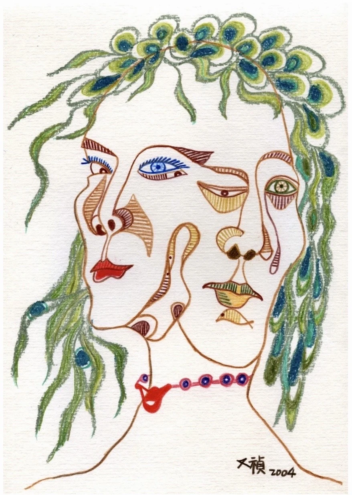
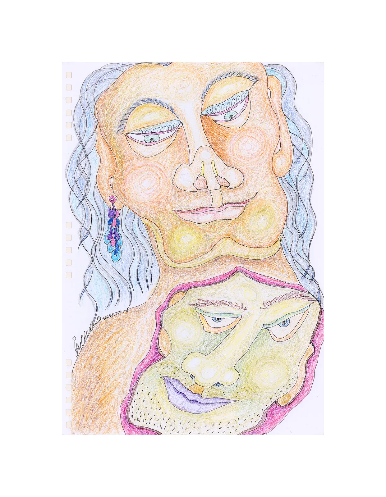
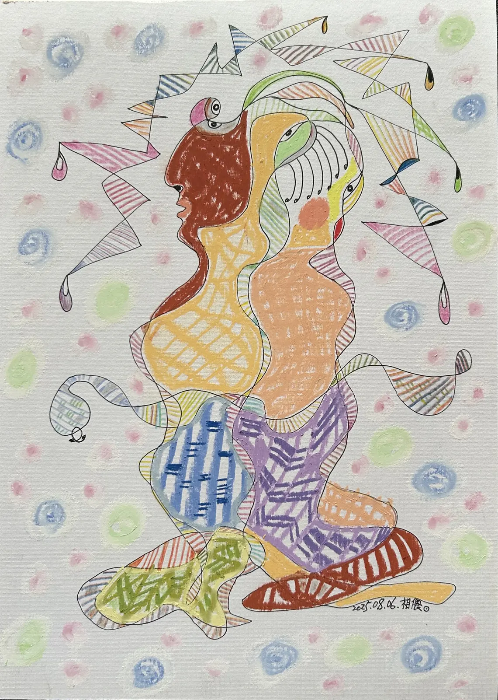
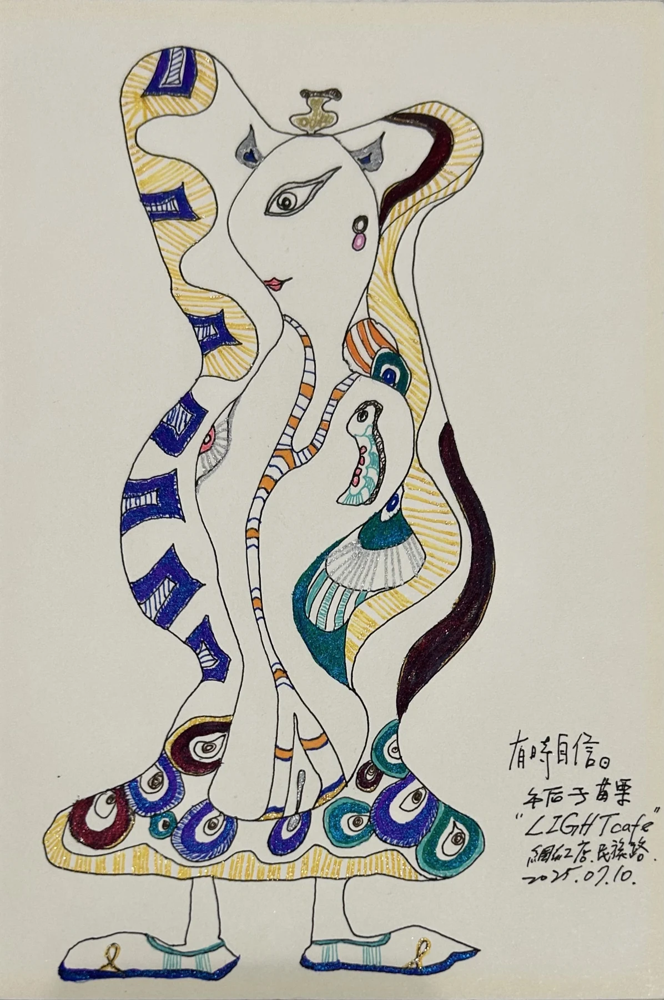
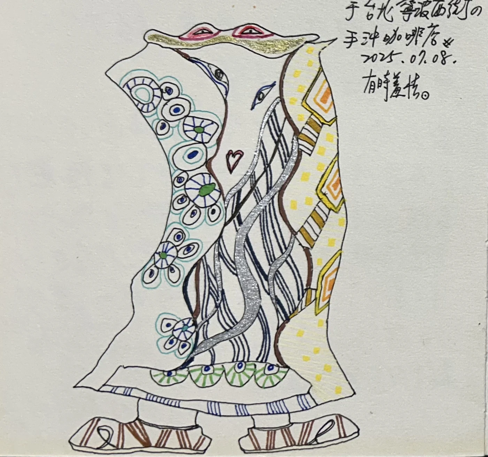

人格考古學 Archaeology of Persona
自我肖像層 Self-Portrait Layer
以自畫像作為人格考古的起點，觀看臉孔、凝視、身體與內在角色如何在不同時期逐漸浮現。 Self-portraits as the starting layer of persona archaeology.
自我肖像層分類 Self-Portrait Layer Categories
最初的自我凝視 The First Self-Gaze
這一段保留自我被看見的第一層痕跡，讓臉孔、內在與線條成為人格考古的起點。 This section preserves the first traces of the self being seen, making face, interiority, and line the starting point of persona archaeology.
真實的自我 True Self

非表象之內在 Nonrepresentational Inner Self

自我肖像層分類 Self-Portrait Layer Categories
關係中的自我 The Self in Relationship
當自我進入關係，姿態開始傾斜、靠近或退後；臉孔也在親密與不確定之間慢慢浮現。 When the self enters relation, posture begins to tilt, approach, or withdraw; faces slowly emerge between intimacy and uncertainty.
相偎 Leaning Together

有時自信、有時羞怯 Sometimes Confident, Sometimes Shy


自我肖像層把「我」放回線條、陶土與凝視之中，讓自我不是固定答案，而是一次次被觀看後留下的形狀。 The Self-Portrait Layer places the I back into line, clay, and gaze, making the self not a fixed answer but a form left by repeated acts of seeing.
這些作品像人格考古學的第一塊地層，安靜地保存了後來所有角色與群像的起點。 These works are the first stratum of Archaeology of Persona, quietly preserving the origin of all later figures and groups.